Install the module, pick which AI you'll use, follow the steps. Most people are connected in under ten minutes.
1. Install
2. Pick your AI
3. Connect
Install the module on your store
This is the only step that needs your Magento developer or hosting admin — the rest you can do yourself. If you don't run the server, copy the commands below and send them to the person who does.
What should the AI be able to do?
Tick what applies. The install commands below update to match.
Run these commands
From the Magento installation folder. If you don't run the server, copy this and send it to whoever does.
You'll need your store address. That's the URL you visit when you log into your Magento admin — e.g. https://shop.example.com. Keep it handy for the next step.
Pick the AI you'll connect
Choose the one you use. Each option has its own step-by-step setup on the next screen.
Connect your AI
Follow the steps for the AI you picked. Wherever you see <your-store>, replace it with your real store address (e.g. shop.example.com).
Claude (web)
Two parts: first you'll register Claude as an OAuth client in your Magento admin and copy two values, then you'll paste them into Claude's connector setup. After that, signing in works through your normal Magento login.
Local development stores aren't supported here. claude.ai runs on Anthropic's servers, so it can't reach addresses like mystore.docker or mystore.local. If your store isn't publicly reachable over HTTPS, use Claude Code or Cursor instead — they run on your machine and can talk to local hostnames.
Part 1 — Register Claude in your Magento admin
Open OAuth Clients
Sign in to your Magento admin. In the top menu, go to System → MCP → OAuth Clients. Click Add New Client.
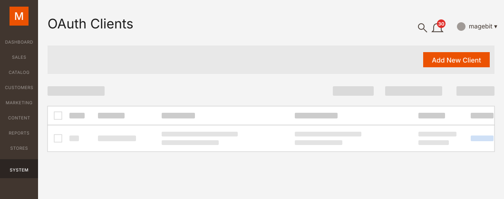
Pick "Claude Web" from the Preset dropdown
On the new client form, open the Preset dropdown and select Claude Web. This autofills the Name and Redirect URIs with the right values — you can leave them as-is.
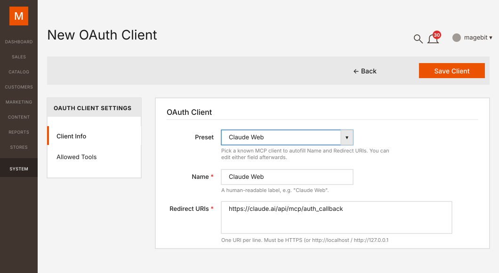
Choose which tools Claude can use
Click the Allowed Tools tab. Nothing is ticked by default — either click Allow All to grant Claude access to every tool, or tick the categories and individual tools you want. You'll also get a second chance to narrow this when you click Connect later.
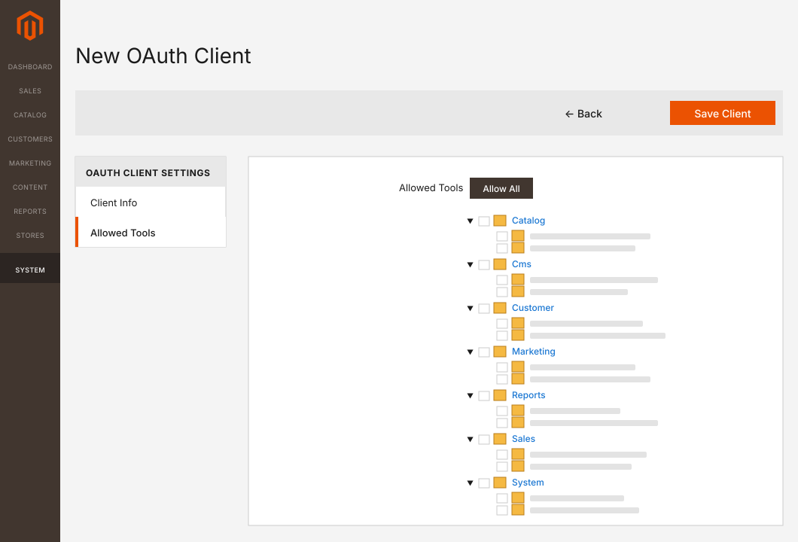
Save and copy the Client ID + Secret
Click Save Client (top right). You'll be taken to a confirmation page that shows the Client ID and Client Secret. Copy both — the secret is only shown once.
Lost the secret? There's no in-place regenerate — delete the OAuth client and create a new one. The old credentials stop working immediately.
Part 2 — Add the connector in Claude
Open Claude's connectors page
Go to claude.ai/customize/connectors and sign in if you haven't already. (Same page is reachable from the Claude menu → Customize → Connectors.)
Click the + icon, then "Add custom connector"
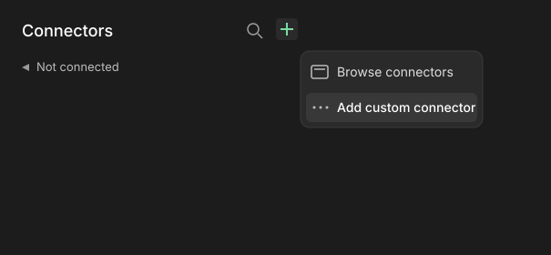
Fill in the connector details
Name: anything you'll recognise (e.g. My Store).
Remote MCP server URL: https://<your-store>/mcp
Expand Advanced settings and paste the two values you copied from Magento:
OAuth Client ID — paste from Part 1.
OAuth Client Secret — paste from Part 1.
Click Add.
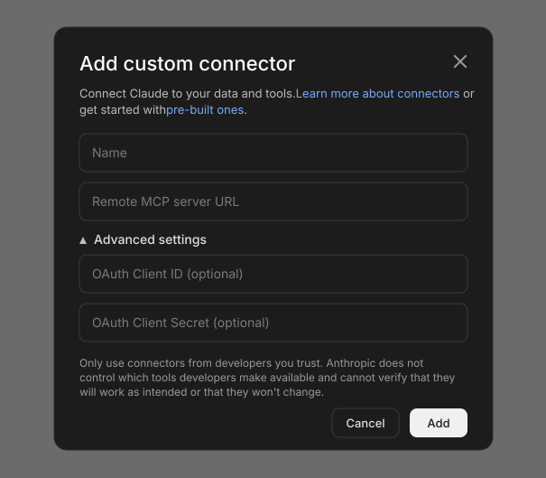
Click Connect
You'll land on a page that says You are not connected to Magento MCP yet. Click Connect.
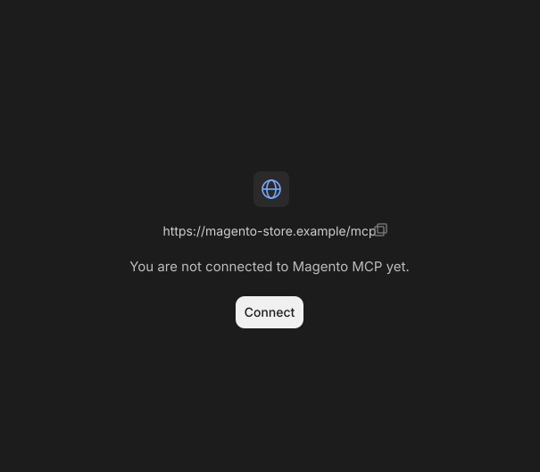
Approve access in your Magento store
You'll be sent to your Magento store. If you're not already signed in to the admin, sign in. The Authorize MCP access page shows the categories of tools Claude is asking for — untick anything you don't want Claude to have, then click Approve selected.
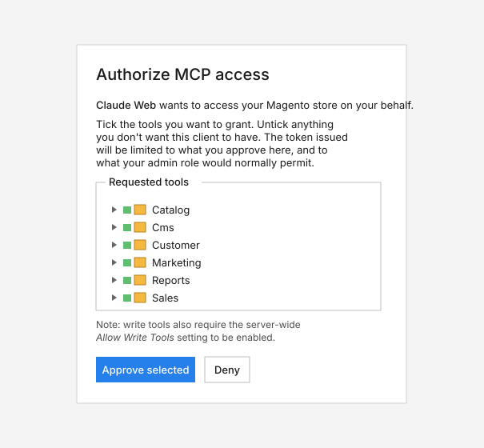
You're done
You'll be sent back to Claude and the connector appears in your list. Start a new chat and try the example below.
Try it out
Open a new chat and ask:
Show me my store's recent orders.
If something goes wrong
"Couldn't connect" right after clicking Add
Your store needs to be reachable from the internet over HTTPS — Claude can't see a local .local or .docker address.
"Invalid client" on the Magento authorize page
The Client ID or Secret was pasted with extra whitespace or doesn't match the one stored in Magento. Open the OAuth client in Magento admin, copy the values again, edit the connector in Claude and re-paste them.
"You don't have permission to do that" after approving
The admin user who signed in is restricted. Sign in to Magento admin as a different user when you click Connect again, or ask your developer to widen that user's role.
Claude Code
Claude Code runs on your machine, so it can talk to your store directly — including local development stores (mystore.docker, mystore.local). The simplest setup is a connection token.
Two parts: first you mint a token in your Magento admin, then you point Claude Code at your store with that token.
Part 1 — Create a connection token
Open MCP Connections in your Magento admin
Sign in to your Magento admin. In the top menu, go to System → MCP → Connections. Click New Connection.
Fill in the Token Info tab
Pick your Admin User, give the token a Name (e.g. Claude Code, laptop), and set Allow Write Tools to Yes if you want Claude Code to make changes. Save.
Copy the token
The next screen shows the token once. Copy it now.
By default this stores the server in local scope (current folder, just you). Add --scope user if you want the server available in every folder on your machine, or --scope project if you want it committed to .mcp.json and shared with everyone on the project.
Check it's connected
claude mcp list
You should see magento with a connected status. Inside a Claude Code session you can also run /mcp to inspect server details and tool counts.
Try it out
Start a Claude Code session and ask:
Use the magento server to show me my store's recent orders.
Prefer the command line for token creation?
If you have terminal access to your Magento server, you can mint the token there instead of using the admin panel:
Claude Code does support OAuth 2.1 + PKCE, but this server doesn't support automatic OAuth client registration. You'll need to pre-register Claude Code as an OAuth client in your Magento admin (System → MCP → OAuth Clients) using the Custom preset, set Redirect URIs to http://localhost:<port>/callback (Claude Code defaults to 33418; whichever port you pick must match the --callback-port flag below), and then pass the credentials when adding the server:
The token approach above is simpler and more reliable for a CLI tool — only reach for OAuth if you have a specific reason to.
If something goes wrong
"401 Unauthorized"
The token is wrong, revoked, or the Authorization header is malformed. Re-run claude mcp remove magento then add it again with a fresh token.
"failed to connect" right after claude mcp add
The store address has to be HTTPS. For local development stores, make sure your shell can reach the URL — try curl -I https://<your-store>/mcp first.
No tools show up in chat
Run claude mcp list and confirm the connection is green. If it's red, remove it and add it again.
Cursor
Cursor doesn't have a browser sign-in flow, so you'll create a small connection token in your Magento admin and paste it into Cursor's settings.
Part 1 — Create a connection token
Open MCP Connections in your Magento admin
Sign in to your Magento admin. In the top menu, go to System → MCP → Connections. Click New Connection.
Fill in the Token Info tab
On the new connection form, the Token Info tab is open by default. Fill it in:
Admin User — pick your own admin account (the token inherits its permissions).
Name — something you'll recognise (e.g. Cursor on my laptop).
Expires At (UTC) — leave blank for a token that doesn't expire, or pick a date.
Allow Write Tools — set to Yes if you want Cursor to make changes (create products, edit pages, etc.).
(Optional) Narrow the Resource Access
Click the Resource Access tab. Leave it on All for full access, or switch to Custom to tick only the specific tools you want Cursor to use.
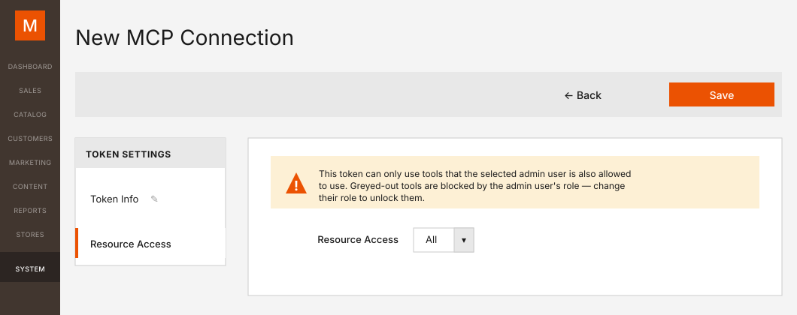
Save and copy the token
Click Save (top right). The next screen shows the token once. Copy it now — it can't be shown again.
Lost it? No problem — just delete that connection and create a new one. The old token stops working immediately.
Prefer the command line?
If you have terminal access to your Magento server, you can create the token there instead:
bin/magento magebit:mcp:token:create \
--admin-user <username> \
--name "Cursor on my laptop" \
[--allow-writes]
Part 2 — Tell Cursor about your store
Open Cursor's MCP settings
In Cursor, open Settings → Tools & MCPs. Click + New MCP Server — Cursor opens ~/.cursor/mcp.json in an editor tab (or creates it if it doesn't exist yet). For a per-project connection instead, create .cursor/mcp.json in the project root.
Save the file. Cursor picks up the change immediately — no reload needed.
Check the server's connected
Back on Settings → Tools & MCPs, your magento server appears under Installed MCP Servers with a green status dot and a tool count. Toggle it on if it isn't already.
Try it out
Open Cursor's chat sidepanel (Cmd+L on Mac, Ctrl+L on Windows/Linux), switch to Agent mode at the bottom of the chat (MCP tools only work in Agent mode, not Ask), and ask:
Show me my store's recent orders.
Prefer OAuth over a bearer token?
Cursor also supports OAuth for MCP servers. Register an OAuth client in your Magento admin (System → MCP → OAuth Clients, Custom preset, Redirect URIs set to whatever your Cursor build expects — check Cursor's docs or its first-connect error message for the exact URL), then point Cursor's mcp.json at the URL alone (no headers block). Cursor triggers OAuth automatically when it can't find auth credentials.
If something goes wrong
Server stuck on "starting"
There's a typo in mcp.json. Even one missing quote or extra comma will break it. Paste it into a JSON validator like jsonlint.com to check.
Cursor ignores your store's tools
Cursor only uses MCP servers in Agent mode — not in Ask mode. Switch at the bottom of the chat panel.
"Unauthorized"
The token is wrong, or you mistyped it when pasting. Create a fresh one and try again.
ChatGPT
You need a paid plan with Developer mode. Custom MCP apps are only available on ChatGPT Plus, Pro, Business, Enterprise and Edu — not the Free tier. You'll also need to switch on Developer mode in Settings before you can create one.
ChatGPT generates a unique Callback URL for each app, so the order matters: you'll start in ChatGPT to grab that URL, then create the matching OAuth client in your Magento admin, then come back to ChatGPT to finish. OAuth is the only auth ChatGPT accepts for custom apps — no API keys.
Public store only. ChatGPT's OAuth flow runs through OpenAI's servers, so it can't reach private addresses like mystore.docker or mystore.local. If your store isn't publicly reachable over HTTPS, use Claude Code or Cursor instead — they run on your machine.
Part 1 — Enable Developer mode in ChatGPT
Open Settings → Apps
Go to chatgpt.com and sign in. Open Settings → Apps. On a workspace plan (Business / Enterprise / Edu), an admin may need to enable Developer mode for the workspace first.
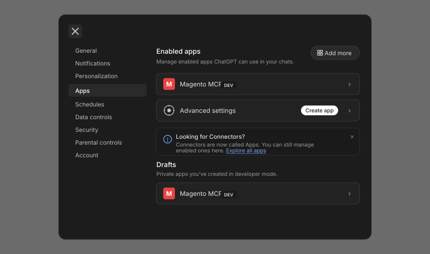
Click Advanced settings → toggle Developer mode on
Under Advanced settings, switch on Developer mode. (It's marked Elevated risk because dev-mode apps aren't reviewed by OpenAI — that's expected.) A Create app button appears at the top of the Advanced settings panel once it's on.
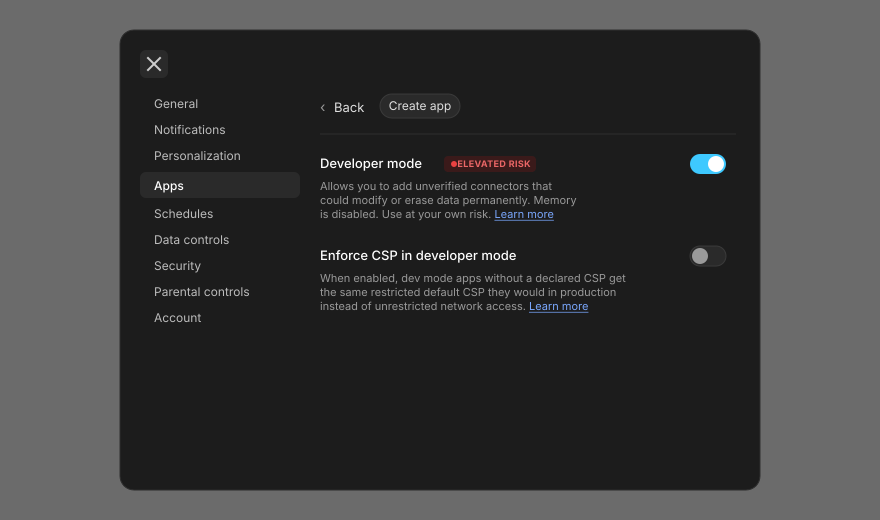
Part 2 — Grab ChatGPT's Callback URL
Click Create app
From the Apps page, click Create app. The New App dialog opens.
Open Advanced OAuth settings and copy the Callback URL
Expand Advanced OAuth settings. Under Client registration, the Registration method defaults to User-Defined OAuth Client — leave it there (DCR and CIMD show as unavailable, which is expected). ChatGPT displays a Callback URL like https://chatgpt.com/connector/oauth/<random-id> — the random ID is unique to this app. Click Click to copy to grab it. Keep this dialog open; you'll need it in Part 4.
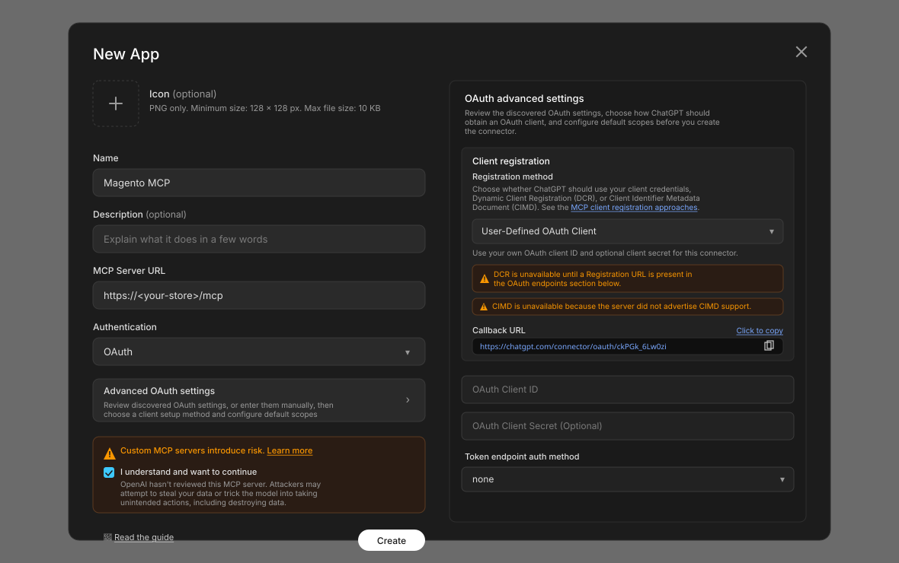
Part 3 — Register the OAuth client in your Magento admin
Open OAuth Clients
In a new tab, sign in to your Magento admin. In the top menu, go to System → MCP → OAuth Clients. Click Add New Client.
Fill in the form with the Custom preset
On the new client form, open the Preset dropdown and select Custom. ChatGPT generates a different Callback URL for every app, so a static preset wouldn't help anyway — you'll paste the per-app URL by hand.
Name: e.g. ChatGPT.
Redirect URIs: paste the Callback URL you copied from ChatGPT in Part 2 (e.g. https://chatgpt.com/connector/oauth/<random-id>).
Choose which tools ChatGPT can use
Click the Allowed Tools tab. Nothing is ticked by default — click Allow All for full access, or tick the categories and tools you want.
Save and copy the Client ID + Secret
Click Save Client. You'll see the Client ID and Client Secret. Copy both — the secret is only shown once.
Part 4 — Finish creating the app in ChatGPT
Paste the Client ID (and Secret if you want it)
Back in the ChatGPT New App dialog, paste your Magento OAuth Client ID. The OAuth Client Secret field is optional — leave it blank to use PKCE without a secret, or paste the Magento secret in for client-secret auth.
Acknowledge the risk and click Create
Tick I understand and want to continue on the risk notice, then click Create.
Connect and approve access in Magento
ChatGPT opens your Magento login page — sign in if needed. On the Authorize MCP access page, untick anything you don't want ChatGPT to have, then click Approve selected.
Switch it on in your chat
Open a new chat. Click the + in the message composer → hover More, and pick your app from the submenu. Without this step, ChatGPT won't use your store's tools. Once enabled, your app appears as a chip next to the + button — that's how you know it's active for the current chat.
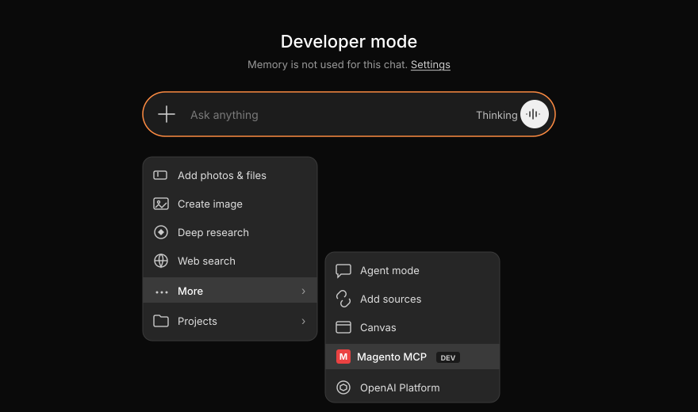
Try it out
Show me my store's recent orders.
If something goes wrong
I can't find Developer mode
It's in Settings → Apps → Advanced settings → Developer mode, and it requires a Plus/Pro/Business/Enterprise/Edu plan. On Business / Enterprise / Edu, your workspace admin has to enable it first.
"Couldn't save the connector"
Your store has to be reachable from the internet over HTTPS. ChatGPT can't see a local or staging-only address.
"Invalid redirect URI" on the Magento authorize page
The Redirect URI you saved in Magento doesn't match ChatGPT's Callback URL. Open the OAuth client in Magento admin and re-paste the exact https://chatgpt.com/connector/oauth/<random-id> string from ChatGPT's Advanced OAuth settings. It must match character for character — no trailing slash.
Your store isn't in the Tools list
You probably skipped the last step — click the + in the chat composer and pick your app under More.
"You don't have permission"
The admin user who signed in is restricted. Sign in as a different admin user, or ask your developer to widen that user's role.
Another MCP client
Any MCP-compatible client can connect to your store. You'll need two things — your store's MCP address and a way for the client to prove who it is. Pick whichever method your client supports:
OAuth 2.1 — the client signs in through your Magento admin. Best for hosted/web clients and any client that supports it.
Bearer token — you mint a token in Magento and paste it into the client. Simpler, works with anything.
Your store's MCP address
MCP server URL
https://<your-store>/mcp
Option A — OAuth 2.1
Use this if your client lets you paste an OAuth Client ID and Secret (or supports automatic OAuth discovery).
Register the client in Magento admin
Sign in to your Magento admin. Go to System → MCP → OAuth Clients and click Add New Client.
Fill in Name and Redirect URI
Open the Preset dropdown — if your client is in the list, pick it and skip ahead. If it isn't, fill the fields manually:
Name: anything you'll recognise (e.g. the client name).
Redirect URIs: the OAuth callback URL from your client's documentation. Must match exactly — no trailing slash.
Choose which tools the client can use
Click the Allowed Tools tab. Nothing is ticked by default — click Allow All for full access, or tick the categories and tools you want.
Save and copy the Client ID + Secret
Click Save Client. You'll see a Client ID and a Client Secret. Copy both — the secret is only shown once.
Configure your client
In your MCP client, add a new server with the URL above and paste the Client ID and Secret into the OAuth fields. When you connect, your Magento admin login page opens — sign in and click Approve selected.
OAuth metadata endpoints (for clients that auto-discover)
Some clients can discover OAuth endpoints automatically from RFC 8414 and RFC 9728. The metadata lives at:
You'll still need to pre-register the client in Magento admin to get a Client ID and Secret — this server doesn't support Dynamic Client Registration.
Option B — Bearer token
Use this if your client lets you paste an API key or an Authorization header. Simplest path — no consent screen, no client registration.
Create a token in Magento admin
Sign in to your Magento admin. Go to System → MCP → Connections and click New Connection.
On the Token Info tab, pick your Admin User, give the token a Name, and set Allow Write Tools to Yes if the client should be able to make changes. Then click Save.
Copy the token
The next screen shows the token once. Copy it — if you lose it, just delete that connection and create a new one.
Configure your client
Point your client at the URL above. Send the token as an Authorization header:
Authorization: Bearer <your-token>
Most MCP clients have either a header field in their server config, or a way to call the server through the mcp-remote stdio bridge — that bridge takes a --header flag:
Once connected, try this prompt in your MCP client:
Show me my store's recent orders.
If something goes wrong
401 Unauthorized
For bearer: the token is wrong, revoked, or the Authorization header is malformed. For OAuth: the Client ID or Secret is wrong, or the Redirect URI doesn't match what the client is using.
503 Service Unavailable
The MCP server is turned off. Ask your developer to check Stores → Configuration → Magebit → MCP Server and confirm Enable MCP Server is set to Yes.
"Origin rejected"
Your client's origin isn't in the allowlist. Add it under Stores → Configuration → Magebit → MCP Server → Allowed Origins.
Unsupported protocol version
The server speaks MCP 2025-06-18. Older clients may need to send Mcp-Protocol-Version: 2025-06-18 explicitly, or update to a newer client build.